<main id="homepage" role="main"> <!-- main content starts here -->

  <section class="top-section top-section--main-color">
    <div class="row">
      <div class="medium-12 column">
        <h1></h1>
        <h3 class="top-section__tagline">{{page.subtitle}}</h3>
      </div>
    </div>
    <!-- <a href="submit.html" class="button" id="submit-button">Submit Research</a> -->
    <section class="page-section main-search-section">
      <div class="align-center">
        <div class="search-box-container">
          <form class="search search--main-search search--negative" action="search.html">
            <input id="index-search" class="" type="text" name="q" placeholder="Search by keyword">
            <input class="search__trigger material-icons" type="submit" value="search">
          </form>
        </div>
        <div class="browsing-ways">
          <div class="large-12 column">
            <a href="./authors.html" class="button">Browse by author</a>
            <a href="./categories.html" class="button">Browse by category</a>
            <!-- <a href="http://ogrx.org/organizations.html" class="button">Browse by organization</a>
            <a href="http://ogrx.org/selectedreadings.html" class="button">Selected Readings</a> -->

          </div>
        </div>
      </div>
    </section>
  </section>

  <!-- <section id="organizations" class="divider">
    <h1>Founding Partners</h1>
  </section>

  <section class="page-section">
    <div class="row expanded align-center">
      {% for organization in site.data.organizations %}
      {% if organization.founding_partner %}
      <div class="small-12 medium-4 large-3 column">
        <div class="organization-logo organization-logo--{{ organization.title | slugify }}">
          <a href="organizations/{{ organization.title | slugify }}.html"></a>
        </div>
      </div>
      {% endif %}
      {% endfor %}
    </div>
  </section> -->

  <section id="categories" class="divider">
    <h1>Browse by Category</h1>
  </section>

  <section class="page-section main-categories">
    <div class="row expanded small-collapse medium-collapse large-collapse" data-equalizer>
      <div class="small-12 medium-4 large-4 column ">
        <!-- <a class="category-item category-item--all" href="by/all.html"> -->
        <a class="category-item category-item--all" href="all.html">
          <div class="aligner">
            <div class="aligner-item">
              View All
            </div>
          </div>
        </a>
      </div>
      {% for category in site.data.main-categories %}
      {% assign name = category.title %}
      {% if category.display_name %}
      {% assign name = category.display_name %}
      {% endif %}
      {% if category.featured %}
      <div class="small-12 medium-4 large-4 column" data-equalizer-watch>

        <a class="category-item category-item--{{name | slugify}}" href="categories/{{category.title | slugify}}.html">
          <div class="aligner">
            <div class="aligner-item">
              {{name}}
            </div>
          </div>
        </a>

      </div>
      {% endif %}
      {% endfor %}
    </div>
  </section>

  <!-- <section id="categories" class="divider">
    <h1>Recent Highlights</h1>
  </section>

  <section class="page-section" style="padding: 0; background-color: #523080">
    <div class="slider slick"  data-equalizer>


      {% assign blog = site.data.contentful.spaces.blog.blogpost | date_sort | reverse %}
      {% assign list = site.data.contentful.spaces.lists.list | date_sort | reverse %}

      {% assign maxitems = 3 %}
      {% assign x = 0 %}
      {% assign y = 0 %}
      {% assign z = 0 %}

      {% for inf in (0..99) %}

      {% if x > maxitems-1 %}
      {% break %}
      {% endif %}

      {% assign oddeven = forloop.index0 | modulo:2 %}
      {% if oddeven == 0 %}
      {% assign i =  blog[y] %}
      {% assign type = 'blog' %}
      {% assign y = y | plus:1 %}
      {% else %}
      {% assign i = list[z] %}
      {% assign type = 'list' %}
      {% assign z = z | plus:1 %}
      {% endif %}

      {% if i %}
      <section id="slide-id" class="slide
      {% if type == 'blog' %}
      slide--color1
      {% elsif type == 'list' %}
      slide--color2
      {% endif %}
      " data-equalizer-watch>
      <header>
        <div class="row">
          <div class="column large-12">
            {% if type == 'blog' %}
            <h4>From the Blog</h4>
            {% elsif type == 'list' %}
            <h4>From Selected Readings</h4>
            {% endif %}
          </div>
        </div>
      </header>
      <div class="row slide__content">
        <div class="column small-12 medium-6 large-6">
          <h2 class="slide__project-name">{{i.title}}</h2>
          <h3 class="slide__question"><span class="">{{i.sys.created_at | date: '%B %d, %Y'}}</span></a> by {% for a in i.author %} <a href="{% assign found = false %}{% for b in site.data.custom_authors %}{% if a == b.title %}{{a | datapage_url: 'authors'}}{% assign found = true %}{% endif %}{% endfor %}{% unless found %}by/author.html?query={{a | replace: ' ', '+'  }}{% endunless %}"><span class="">{{a}}</span></a> {% endfor %}</h3>
        </div>
        <div class="column small-12 medium-6 large-6">
          {% if type == 'blog' %}
          {{i.post | truncate: 500 | markdownify}}
          {% elsif type == 'list' %}
          {{i.description | truncate: 500 | markdownify }}
          {% endif %}
        </div>
      </div>
      <div class="row slide__content">
        <div class="column medium-6">
          <div class="slide__action">
          </div>
        </div>
        <div class="column medium-6">
          <div class="slide__action">
            {% if type == 'blog' %}
            <a class="button button--naked" href="{{i.title | datapage_url: 'blog'}}">Find out more<i class="material-icons">arrow_forward</i></a>
            {% elsif type == 'list' %}
            <a class="button button--naked" href="{{i.title | datapage_url: 'list'}}">Find out more<i class="material-icons">arrow_forward</i></a>
            {% endif %}
          </div>
        </div>
      </div>
    </section>
    {% assign x = x | plus:1 %}
    {% endif %}

    {% endfor %}
  </div>
</section> -->

</main>
